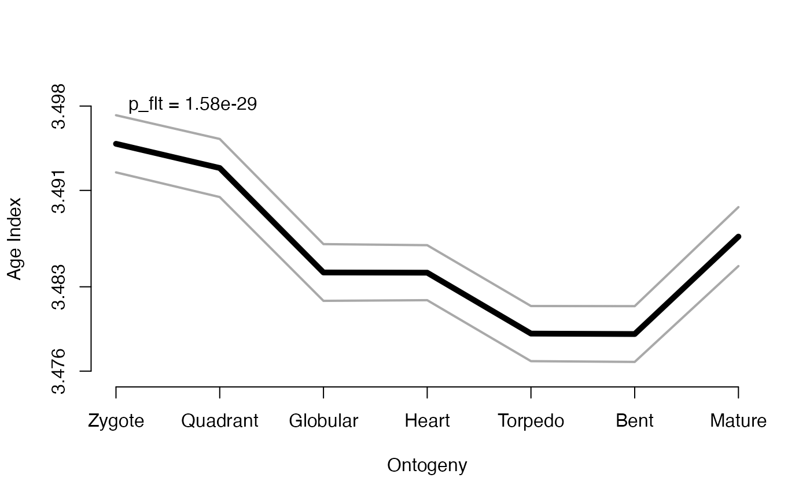

This function transforms the gene expression set stored in an input PhloExpressionSet or DivergenceExpressionSet object and returns a PhloExpressionSet or DivergenceExpressionSet object with transformed expression levels. The resulting transformed PhloExpressionSet or DivergenceExpressionSet object can then be used for subsequent analyses based on transformed expression levels.
tf(ExpressionSet, FUN)
| ExpressionSet | a standard PhloExpressionSet or DivergenceExpressionSet object. |
|---|---|
| FUN | any valid function that transformes gene expression levels. |
a standard PhloExpressionSet or DivergenceExpressionSet object storing transformed gene expression levels.
Motivated by the dicussion raised by Piasecka et al., 2013, the influence of
gene expression transformation on the global phylotranscriptomics pattern does not seem negligible.
Hence, different transformations can result in qualitatively different TAI or TDI
patterns.
Initially, the TAI and TDI formulas were defined for absolute expression levels.
So using the initial TAI and TDI formulas with transformed expression levels
might turn out in qualitatively different patterns when compared with non-transformed expression levels,
but might also belong to a different class of models, since different valid expression level transformation functions result in different patterns.
The purpose of this function is to allow the user to study the qualitative impact of different transformation functions on
the global TAI and TDI pattern, or on any subsequent phylotranscriptomics analysis.
The examples using the PhyloExpressionSetExample data set show that using common gene expression
transformation functions: log2 (Quackenbush, 2001 and 2002), sqrt (Yeung et al., 2001),
boxcox, or inverse hyperbolic sine transformation, each transformation results
in qualitatively different patterns.
Nevertheless, for each resulting pattern the statistical significance can be tested
using either the FlatLineTest or ReductiveHourglassTest (Drost et al., 2014)
to quantify the significance of interest.
Piasecka B, Lichocki P, Moretti S, et al. (2013) The hourglass and the early conservation models--co-existing patterns of developmental constraints in vertebrates. PLoS Genet. 9(4): e1003476.
Quint M., Drost H.G., Gabel A., Ullrich K.K., Boenn M., Grosse I. (2012) A transcriptomic hourglass in plant embryogenesis. Nature 490: 98-101.
Domazet-Loso T., Tautz D. (2010) A phylogenetically based transcriptome age index mirrors ontogenetic divergence patterns. Nature 468: 815-8.
Drost HG et al. (2015) Mol Biol Evol. 32 (5): 1221-1231 doi:10.1093/molbev/msv012
K.Y. Yeung et al.: Model-based clustering and data transformations for gene expression data. Bioinformatics 2001, 17:977-987
K.Y. Yeung et al.: Supplement to Model-based clustering and data transformations for gene expression data - Data Transformations and the Gaussian mixture assumption. Bioinformatics 2001, 17:977-987
P.A.C. Hoen et al.: Deep sequencing-based expression analysis shows major advances in robustness, resolution and inter-lab portability over five microarray platforms. Nucleic Acids Research 2008, Vol. 36, No. 21
H.H. Thygesen et al.: Comparing transformation methods for DNA microarray data. BMC Bioinformatics 2004, 5:77
John Quackenbush: Microarray data normalization and transformation. Nature Genetics 2002, 32:496-501
John Quackenbush: Computational Analysis of Microarray Data. Nature Reviews 2001, 2:418-427
R. Nadon and J. Shoemaker: Statistical issues with microarrays: processing and analysis. TRENDS in Genetics 2002, Vol. 18 No. 5:265-271
B.P. Durbin et al.: A variance-stabilizing transformation for gene-expression microarray data. Bioinformatics 2002, 18:S105-S110
J. M. Bland et al.: Transforming data. BMJ 1996, 312:770
John B. Burbidge, Lonnie Magee and A. Leslie Robb (1988) Alternative Transformations to Handle Extreme Values of the Dependent Variable. Journal of the American Statistical Association, 83(401): 123-127.
G. E. P. Box and D. R. Cox (1964) An Analysis of Transformations. Journal of the Royal Statistical Society. Series B (Methodological), 26(2): 211-252.
Hajk-Georg Drost
data(PhyloExpressionSetExample) # a simple example is to transform the gene expression levels # of a given PhyloExpressionSet using a sqrt or log2 transformation PES.sqrt <- tf(PhyloExpressionSetExample, sqrt) PES.log2 <- tf(PhyloExpressionSetExample, log2) # in case a given PhyloExpressionSet already stores gene expression levels # that are log2 transformed and need to be re-transformed to absolute # expression levels, to perform subsequent phylotranscriptomics analyses # (that are defined for absolute expression levels), one can re-transform # a PhyloExpressionSet like this: PES.absolute <- tf(PES.log2 , function(x) 2^x) # which should be the same as PhyloExpressionSetExample : head(PhyloExpressionSetExample)#> Phylostratum GeneID Zygote Quadrant Globular Heart #> 1 1 at1g01040.2 2173.6352 1911.2001 1152.5553 1291.4224 #> 2 1 at1g01050.1 1501.0141 1817.3086 1665.3089 1564.7612 #> 3 1 at1g01070.1 1212.7927 1233.0023 939.2000 929.6195 #> 4 1 at1g01080.2 1016.9203 936.3837 1181.3381 1329.4734 #> 5 1 at1g01090.1 11424.5667 16778.1685 34366.6493 39775.6405 #> 6 1 at1g01120.1 844.0414 787.5929 859.6267 931.6180 #> Torpedo Bent Mature #> 1 1000.2529 962.9772 1696.4274 #> 2 1496.3207 1114.6435 1071.6555 #> 3 864.2180 877.2060 894.8189 #> 4 1392.6429 1287.9746 861.2605 #> 5 56231.5689 66980.3673 7772.5617 #> 6 942.8453 870.2625 792.7542#> Phylostratum GeneID Zygote Quadrant Globular Heart #> 1 1 at1g01040.2 2173.6352 1911.2001 1152.5553 1291.4224 #> 2 1 at1g01050.1 1501.0141 1817.3086 1665.3089 1564.7612 #> 3 1 at1g01070.1 1212.7927 1233.0023 939.2000 929.6195 #> 4 1 at1g01080.2 1016.9203 936.3837 1181.3381 1329.4734 #> 5 1 at1g01090.1 11424.5667 16778.1685 34366.6493 39775.6405 #> 6 1 at1g01120.1 844.0414 787.5929 859.6267 931.6180 #> Torpedo Bent Mature #> 1 1000.2529 962.9772 1696.4274 #> 2 1496.3207 1114.6435 1071.6555 #> 3 864.2180 877.2060 894.8189 #> 4 1392.6429 1287.9746 861.2605 #> 5 56231.5689 66980.3673 7772.5617 #> 6 942.8453 870.2625 792.7542# plotting the TAI using log2 transformed expression levels # and performing the Flat Line Test to obtain the p-value PlotPattern(ExpressionSet = tf(PhyloExpressionSetExample, log2), type = "l", lwd = 5, TestStatistic = "FlatLineTest")#> $start.arg #> $start.arg$shape #> [1] 1.376034 #> #> $start.arg$rate #> [1] 1661235 #> #> #> $fix.arg #> NULL #>